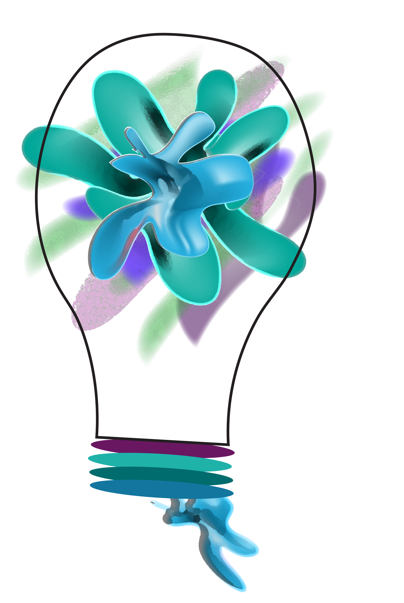

- Get regular exercise
- Eat healthy, regular meals and drink lots of water
- Get plenty of sleep
- Engage in relaxing activities
- Set goals, priorities and values
- Practice gratitude and focus on positivity
Self-care means taking time to do things that you enjoy or that make you feel better. It can include activities you normally do and new things you are trying.

Who will benefit from using this site/guidebook? Those who are:
- seeking to understand more about self-care
- seeking opportunities to improve thier overall health
- sent from a medical professional
- interested in growth opportunities
- seeking new ways to work on their health